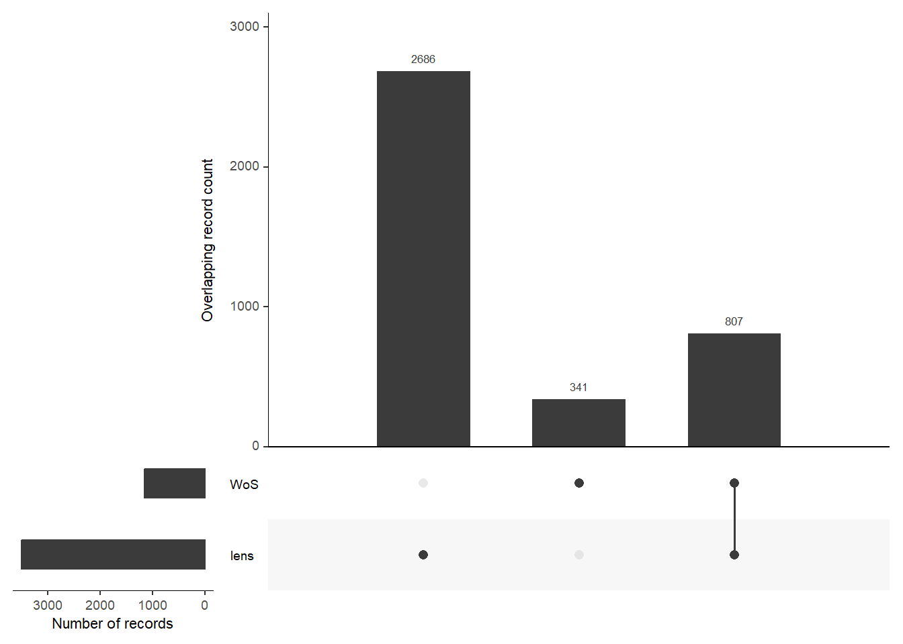
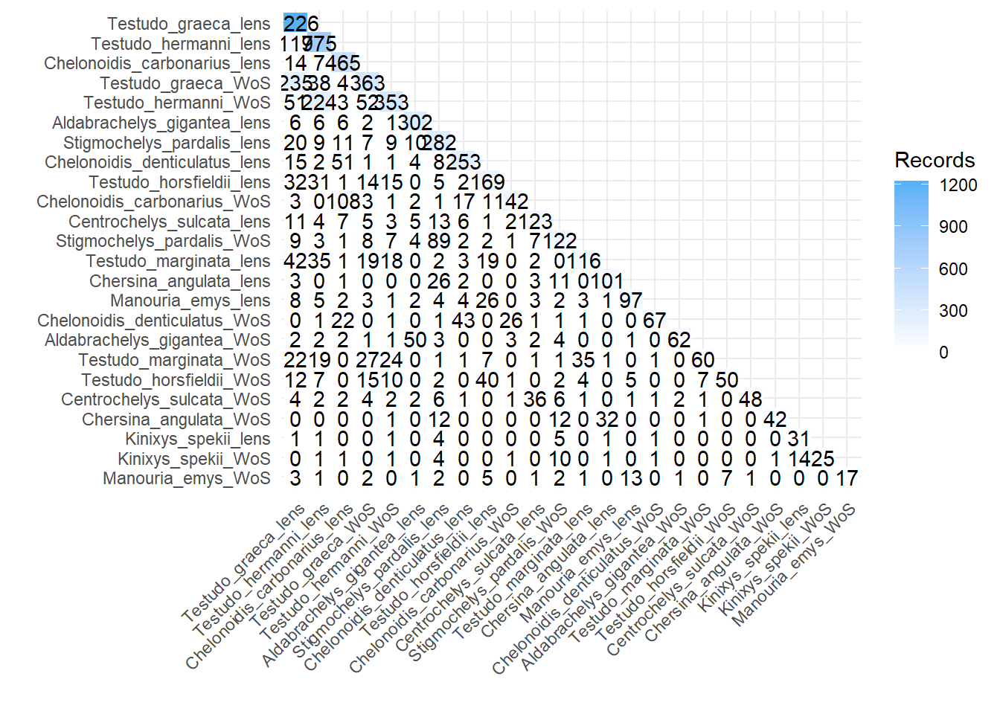
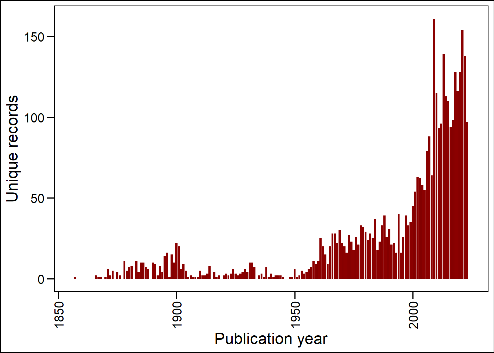

Search strategies for NDFs on Tortoises
Search strategy
Searches were conducted in the Web of Science Core Collection (Entitlements: WOS.SCI: 1987 to 2023, WOS.AHCI: 1987 to 2023, WOS.ESCI: 2018 to 2023, WOS.SSCI: 1987 to 2023) and in Lens.org. Search terms are shown in the table below (Table 1)
| Species | Web of Science Core Collection | Lens.org |
|---|---|---|
| Generic form of search | TS=(“scientific name” OR “scientific synonyms” OR “English common name” OR “English common name synonyms”) Scientific names and synonyms found in Species+ and English common names listed in Species+ |
“scientific name” OR “scientific synonyms” OR “English common name” OR “English common name synonyms” Scientific synonyms found in Species+ and English common names listed in Species+ |
| Aldabrachelys gigantea | TS=(“Aldabrachelys gigantea” OR “Aldabrachelys elephantina” OR “Chelonoidis gigantea” OR “Dipsochelys abrupta” OR “Dipsochelys arnoldi” OR “Dipsochelys daudinii” OR “Dipsochelys dussumieri” OR “Dipsochelys elephantina” OR “Dipsochelys grandidieri” OR “Dipsochelys hololissa” OR “Geochelone arnoldi” OR “Geochelone dussumieri” OR “Geochelone gigantea” OR “Geochelone hololissa” OR “Testudo daudinii” OR “Testudo elephantina” OR “Testudo gigantea” OR “Testudo hololissa” OR “Aldabra Giant Tortoise”) | “Aldabrachelys gigantea” OR “Aldabrachelys elephantina” OR “Chelonoidis gigantea” OR “Dipsochelys abrupta” OR “Dipsochelys arnoldi” OR “Dipsochelys daudinii” OR “Dipsochelys dussumieri” OR “Dipsochelys elephantina” OR “Dipsochelys grandidieri” OR “Dipsochelys hololissa” OR “Geochelone arnoldi” OR “Geochelone dussumieri” OR “Geochelone gigantea” OR “Geochelone hololissa” OR “Testudo daudinii” OR “Testudo elephantina” OR “Testudo gigantea” OR “Testudo hololissa” OR “Aldabra Giant Tortoise” |
| Centrochelys sulcata | TS=(“Centrochelys sulcata” OR “Geochelone sulcata” OR “Testudo calcarata” OR “Testudo radiata senegalensis” OR “Testudo sulcata” OR “Grooved Tortoise” OR “African Spurred Tortoise”) | “Centrochelys sulcata” OR “Geochelone sulcata” OR “Testudo calcarata” OR “Testudo radiata senegalensis” OR “Testudo sulcata” OR “Grooved Tortoise” OR “African Spurred Tortoise” |
| Chelonoidis carbonarius | TS=(“Chelonoidis carbonarius” OR “Chelonoidis carbonaria” OR “Geochelone carbonaria” OR “Testudo boiei” OR “Testudo carbonaria” OR “Testudo hercules truncata” OR “Red-footed Tortoise” OR “Wood Tortoise”) | “Chelonoidis carbonarius” OR “Chelonoidis carbonaria” OR “Geochelone carbonaria” OR “Testudo boiei” OR “Testudo carbonaria” OR “Testudo hercules truncata” OR “Red-footed Tortoise” OR “Wood Tortoise” |
| Chelonoidis denticulatus | TS=(“Chelonoidis denticulatus” OR “Chelonoidis denticulata” OR “Geochelone denticulata” OR “Testudo cagado” OR “Testudo denticulata” OR “Testudo foveolata” OR “Testudo hercules” OR “Testudo planata” OR “Testudo sculpta” OR “Testudo tabulata” OR “Testudo terrestris americana” OR “Testudo tessellata” OR “Yellow-footed Tortoise” OR “South American Yellow-footed Tortoise” OR “South American Tortoise” OR “Forest Tortoise” OR “Brazilian Giant Tortoise”) | “Chelonoidis denticulatus” OR “Chelonoidis denticulata” OR “Geochelone denticulata” OR “Testudo cagado” OR “Testudo denticulata” OR “Testudo foveolata” OR “Testudo hercules” OR “Testudo planata” OR “Testudo sculpta” OR “Testudo tabulata” OR “Testudo terrestris americana” OR “Testudo tessellata” OR “Yellow-footed Tortoise” OR “South American Yellow-footed Tortoise” OR “South American Tortoise” OR “Forest Tortoise” OR “Brazilian Giant Tortoise” |
| Chersina angulata | TS=(“Chersina angulata” OR “Testudo angulata” OR “Testudo bellii” OR “Testudo tabulata africana” OR “Angulate tortoise” OR “Bowsprit Tortoise” OR “South African Bowsprit Tortoise” OR “Angulated Tortoise”) | “Chersina angulata” OR “Testudo angulata” OR “Testudo bellii” OR “Testudo tabulata africana” OR “Angulate tortoise” OR “Bowsprit Tortoise” OR “South African Bowsprit Tortoise” OR “Angulated Tortoise” |
| Kinixys spekii | TS=(“Kinixys spekii” OR “Homopus darlingi” OR “Kinixys australis” OR “Kinixys jordani” OR “Kinixys youngi” OR “Testudo procterae” OR “Speke’s Hinged Tortoise”) | “Kinixys spekii” OR “Homopus darlingi” OR “Kinixys australis” OR “Kinixys jordani” OR “Kinixys youngi” OR “Testudo procterae” OR “Speke’s Hinged Tortoise” |
| Manouria emys | TS=(“Manouria emys” OR “Geochelone emys” OR “Manouria fusca” OR “Teleopus luxatus” OR “Testudo emydoides” OR “Testudo emys” OR “Testudo falconeri” OR “Testudo nutapundi” OR “Testudo phayrei” OR “Burmese Brown Tortoise” OR “Black Giant Tortoise” OR “Six-legged Tortoise” OR “Asian Tortoise” OR “Asian Giant Tortoise” OR “Burmese Mountain Tortoise”) | “Manouria emys” OR “Geochelone emys” OR “Manouria fusca” OR “Teleopus luxatus” OR “Testudo emydoides” OR “Testudo emys” OR “Testudo falconeri” OR “Testudo nutapundi” OR “Testudo phayrei” OR “Burmese Brown Tortoise” OR “Black Giant Tortoise” OR “Six-legged Tortoise” OR “Asian Tortoise” OR “Asian Giant Tortoise” OR “Burmese Mountain Tortoise” |
| Stigmochelys pardalis | TS=(“Stigmochelys pardalis” OR “Geochelone pardalis” OR “Testudo pardalis” OR “Mountain Tortoise” OR “Leopard Tortoise”) | “Stigmochelys pardalis” OR “Geochelone pardalis” OR “Testudo pardalis” OR “Mountain Tortoise” OR “Leopard Tortoise” |
| Testudo graeca | TS=(“Testudo graeca” OR “Furculachelys nabeulensis” OR “Furculachelys whitei” OR “Testudo anamurensis” OR “Testudo antakyensis” OR “Testudo armeniaca” OR “Testudo cyrenaica” OR “Testudo flavominimaralis” OR “Testudo lamberti” OR “Testudo marokkensis” OR “Testudo mauritanica” OR “Testudo nabeulensis” OR “Testudo pallasi” OR “Testudo perses” OR “Testudo pusilla” OR “Testudo soussensis” OR “Testudo whitei” OR “Testudo zarudnyi” OR “Algerian Tortoise” OR “Mesopotamian Tortoise” OR “Moorish Tortoise” OR “Greek Tortoise” OR “Common Tortoise” OR “Spur-thighed Tortoise”) | “Testudo graeca” OR “Furculachelys nabeulensis” OR “Furculachelys whitei” OR “Testudo anamurensis” OR “Testudo antakyensis” OR “Testudo armeniaca” OR “Testudo cyrenaica” OR “Testudo flavominimaralis” OR “Testudo lamberti” OR “Testudo marokkensis” OR “Testudo mauritanica” OR “Testudo nabeulensis” OR “Testudo pallasi” OR “Testudo perses” OR “Testudo pusilla” OR “Testudo soussensis” OR “Testudo whitei” OR “Testudo zarudnyi” OR “Algerian Tortoise” OR “Mesopotamian Tortoise” OR “Moorish Tortoise” OR “Greek Tortoise” OR “Common Tortoise” OR “Spur-thighed Tortoise” |
| Testudo hermanni | TS=(“Testudo hermanni” OR “Testudo enriquesi” OR “Testudo graeca bettai” OR “Testudo graeca hercegovinensis” OR “Testudo hercegovinensis” OR “Testudo hermanni boettgeri” OR “Testudo hermanni hermanni” OR “Hermann’s Tortoise”) | “Testudo hermanni” OR “Testudo enriquesi” OR “Testudo graeca bettai” OR “Testudo graeca hercegovinensis” OR “Testudo hercegovinensis” OR “Testudo hermanni boettgeri” OR “Testudo hermanni hermanni” OR “Hermann’s Tortoise” |
| Testudo horsfieldii | TS=(“Testudo horsfieldii” OR “Agrionemys horsfieldii” OR “Homopus burnesii” OR “Testudo baluchiorum” OR “Steppe Tortoise” OR “Central Asian Tortoise” OR “Horsfield’s Tortoise” OR “Four-toed Tortoise” OR “Afghan Tortoise”) | “Testudo horsfieldii” OR “Agrionemys horsfieldii” OR “Homopus burnesii” OR “Testudo baluchiorum” OR “Steppe Tortoise” OR “Central Asian Tortoise” OR “Horsfield’s Tortoise” OR “Four-toed Tortoise” OR “Afghan Tortoise” |
| Testudo marginata | TS=(“Testudo marginata” OR “Testudo campanulata” OR “Testudo graja” OR “Testudo nemoralis” OR “Testudo weissingeri” OR “Margined Tortoise” OR “Marginated Tortoise”) | “Testudo marginata” OR “Testudo campanulata” OR “Testudo graja” OR “Testudo nemoralis” OR “Testudo weissingeri” OR “Margined Tortoise” OR “Marginated Tortoise” |
The search resulted in 5336 records. Of these there were 2686 records unique to Lens.org and 341 records unique to WoS. There were 807 records duplicated across databases (Figure 1).
The overlap for each species between databases is shown below (Figure 2)

The records returned were published between 1871 and 2023 (Figure 3) and published in 1094 different journals. Most records are from the Journal Nature, although 668 records have no journal recorded.
